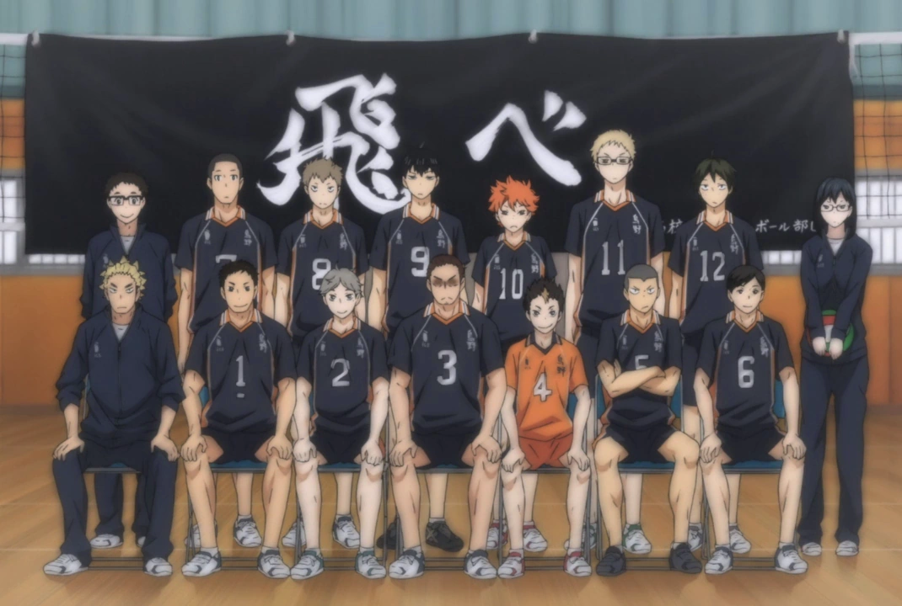

Ekstrakurikuler
SMA Karasuno menyediakan beragam kegiatan ekstrakurikuler untuk mendukung pengembangan minat dan bakat siswa. Salah satu yang paling menonjol adalah Tim Voli SMA Karasuno, yang memiliki sejarah prestasi dan dikenal sebagai tim yang terus berkembang menuju kejayaan. Tim ini telah berhasil bangkit dari masa-masa sulit dan kini kembali menjadi kekuatan yang diperhitungkan di tingkat kompetisi regional.

Tim voli kami dikenal karena etos kerja keras, tekad yang kuat, serta kolaborasi yang solid di antara para pemain. Beberapa prestasi terbaru termasuk keberhasilan mencapai babak puncak dalam turnamen antar-sekolah dan mendapatkan perhatian luas atas gaya permainan yang dinamis dan inovatif.
Lihat Tim Voli Kami